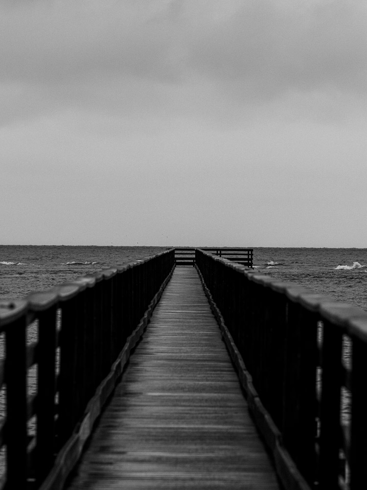

关于
以安静的观察，记录人、城市与自然的瞬间。
我关注日常中的细节：一束光、一次回望、一条雨后的街道。作品横跨人像、街拍、风光、建筑与静物，希望在真实与克制之间保留画面的呼吸。
每一个黄色坐标都连接到一次拍摄现场。以后可以继续添加真实城市、经纬度和照片，让这张地图慢慢长成完整的影像档案。
发送邮件
微信 your_wechat_id

关于
我关注日常中的细节：一束光、一次回望、一条雨后的街道。作品横跨人像、街拍、风光、建筑与静物，希望在真实与克制之间保留画面的呼吸。
每一个黄色坐标都连接到一次拍摄现场。以后可以继续添加真实城市、经纬度和照片，让这张地图慢慢长成完整的影像档案。
微信 your_wechat_id
